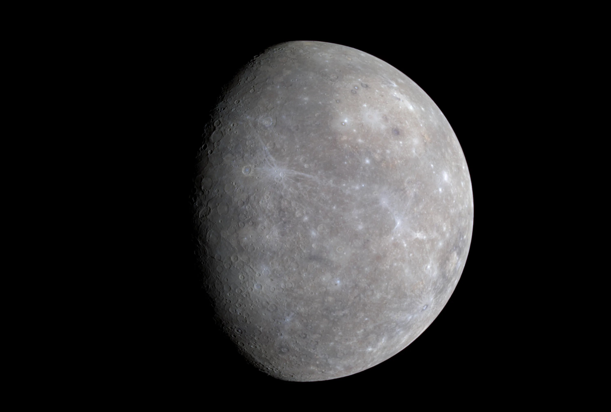
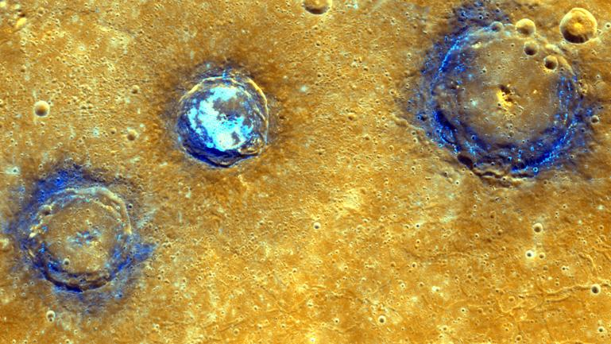
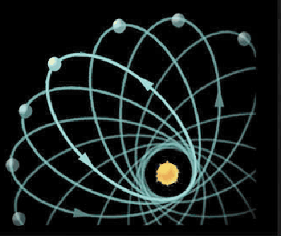

Color map of Mercury's surface - MESSENGER Wide Angle Camera (WAC)

Mercury is the smallest planet in our solar system and nearest to the Sun, which is 0.4 astronomical units away.
With a radius of 2440 kilometers, Mercury is a little more than 1/3 the width of Earth..
Mercury is the second densest planet, after Earth. It has a large metallic core with a radius of about 85% of the planet's radius.

Mercury's surface resembles that of Earth's Moon, scarred by many impact craters resulting from collisions with meteoroids and comets.
NASA's MESSENGER spacecraft gave the enhanced color mosaic of Mercury's crafters Munch, Sander, and Poe, which are located in the northwest portion of the Caloris basin.
The volcanic plains appear orange. All three craters are superposed on these volcanic plains and have excavated low-reflectance material, displayed in blue.

Mercury's highly eccentric, egg-shaped orbit takes the planet as close as 47 million kilometers (perihelion) and as far as 70 million kilometers (aphelion) from the Sun.
Mercury takes 88 Earth days to complete its orbit, slowing down when it is farther away from the Sun and accelerating when it draws closer.
Mercury's orbit is also the first proof of Einstein's theory of general relativity, which states masses curve space-time and other objects travel along that curve.
Because Mercury is so close to the Sun, its orbit is affected more strongly by the Sun’s curved space-time than other planets, accounting for the extra 43 seconds of arc per century in the precession of Mercury’s perihelion.